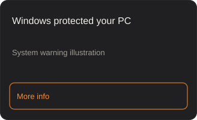
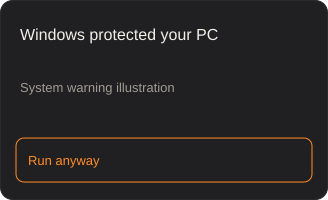

ETK 800-Series
2013–2018 ·  Germany
Germany
B / 192 hp
Configuration: 854 190d (A)
Free · Windows 10/11 · Unofficial
mod manager for BeamNG.drive®
Turn mods on and off in one click, install from the beamng.com repository, find the mod that crashes your game, and start a drive with the right car and map.
v0.1.3.71 · 10.6 MB
No account · No telemetry · Never writes to the game folder
Play and Cars previews are available on wider screens. The mobile preview shows Mods.
Static preview · Enable JavaScript for the interactive demo
ETK 800-Series West Coast, USA
West Coast, USA Demo HatchbackVehicle
Demo HatchbackVehicle Demo Sedan GTVehicle
Demo Sedan GTVehicle Demo PickupVehicleDemo IslandMapDemo Canyon RoadMapETK 800-Series
Demo PickupVehicleDemo IslandMapDemo Canyon RoadMapETK 800-Series ETK I-Series
ETK I-Series Ibishu Covet
Ibishu Covet Ibishu BX-Series
Ibishu BX-Series Hirochi Sunburst
Hirochi Sunburst Hirochi SBR4
Hirochi SBR4Try the app preview below: switch tabs, toggle mods and choose a profile. All data is illustrative; the demo does not launch the game or access your files.
01 / Features
Try familiar actions before you install.
Pick a car and a map, set time of day and traffic, press Play.

Toggle mods, sort them into folders and tags, keep sets as profiles and share them with a code.

Browse the official repository and install mods with one button. Files come straight from beamng.com.

Every car and map with previews, classes D–X and filters like power>400 country:japan.
Try the filter ↓
Look at any car in 3D, try paints, take shots.

Game crashed? The wizard checks your mods in turns and finds the one that breaks loading.

Hover or focus to change the preview.

02 / Car filter
Find a car that suits you with filters from the app
Enable JavaScript to filter. All 12 cars are shown below.
12 of 12 cars
2013–2018 ·  Germany
Germany
B / 192 hp
Configuration: 854 190d (A)
1985–1989 ·  Germany
Germany
C / 140 hp
Configuration: 2400i (M)
1986–1992 ·  Japan
Japan
C / 89 hp
Configuration: 1.5 DXi (M)
1990–1994 ·  Japan
Japan
B / 145 hp
Configuration: 200BX Type-L (M)
2009–2014 ·  Japan
Japan
A / 276 hp
Configuration: 2.5 Sport RS AWD Wagon (DCT)
2013–2020 ·  Japan
Japan
S / 454 hp
Configuration: AWD TT S2 (DCT)

1992–1997 ·  United States
United States
C / 197 hp
Configuration: D15 V8 4WD (A)

1973–1975 ·  United States
United States
C / 190 hp
Configuration: 378 V8 Luxe (A)

1969–1971 ·  United States
United States
B / 194 hp
Configuration: 291 V8 RoadSport Package (M)

1980–1989 ·  Japan
Japan
D / 31 hp
Configuration: Base (M)

2020–2022 ·  Italy
Italy
X / 661 hp
Configuration: GTs (DCT)

2020–2024 ·  France
France
S / 409 hp
Configuration: Vivace S 410Q Arsenic (DCT)
No cars match. Try a lower power or class.
Stock BeamNG.drive previews show each model’s default configuration. Filtering updates the specifications, not the preview. Car names, images and specifications belong to BeamNG GmbH and are shown only to illustrate the app.
A sample of 2–3 stock configurations per car; values come from game metadata. The highest-power matching configuration is shown.
Space or & means AND · A leading − means NOT · Conditions must match the same configuration.
| Key | Value |
|---|---|
power / hp / bhp / мощность | Power (hp, kW) |
weight / mass / вес / масса | Weight (kg, t) |
year / years / год / годы | Production years |
country / страна | Country (code or name) |
class / класс | Class: D < C < B < A < S < X |
drive / drivetrain / привод | Drivetrain |
body / кузов | Body style |
brand / марка / бренд | Brand |
: = < > <= >= · power>220kw & -drive:fwd
Nodes Manager sends nothing to the author, keeps no copies of your mods on any server and never writes to the game install folder.
| Folder | Reads | Writes | Never |
|---|---|---|---|
Game install folder…\steamapps\common\BeamNG.drive | Stock cars, maps and previews. | Nothing. | Never writes here or changes game executables. |
BeamNG user folder%LOCALAPPDATA%\BeamNG\BeamNG.drive\current | db.json, mods, game settings and previews. | db.json (with a backup before changes), mods, settings and previews on your action. The game must be closed before db.json changes. | No db.json changes while the game is running. |
App data%APPDATA%\NodesManager | Profiles, favourites and caches. | Profiles, settings, preview cache, backups and downloaded archives. | Never uploads these files to the author. |
Feature requests are made when needed. The optional update check also runs at startup, at most once a day; turn it off in Settings → Advanced → App updates.
Settings → Folders and files → Maintenance → Settings backup → Restore from backup restores settings, car configurations and db.json. Close the game before restoring db.json.
Tauri update signatures (minisign) are checked before an update is installed. A mismatched signature cancels installation. This is separate from a Windows code-signing certificate: the installer does not have one yet.
That’s the author’s decision. Instead, we openly describe what the app does with your files and give you what you can check: checksums, the list of third-party components and the privacy policy.
It does not modify game install files or executables, bypass protection, distribute or host other people’s mods, collect your data or install anything without your action.
Free · Windows 10/11 64-bit · BeamNG.drive (Steam)
Nodes Manager is a Windows app. Open this page on your PC.
Nodes Manager — mod manager for BeamNG.driveRelease data: build-time fallback
5ecdc5ef023510a8e18758bce8006a72fd421020b293d9e51fc7e82d6581fad9Get the installer from the official Releases page.
Choose a language and accept the agreement.
Nodes Manager can find your Steam installation.
The installer isn’t code-signed yet, so Windows SmartScreen may show a warning. We haven’t bought a signing certificate yet — your support will help us get rid of this warning. Click “More info” → “Run anyway”. You can verify the file by its SHA-256 checksum and on VirusTotal (links are in each release description).


Get-FileHash -LiteralPath '.\Nodes-Manager_0.1.3.71_x64-setup.exe' -Algorithm SHA256SHA-256 confirms that your file matches the published file; it is not a security verdict.
View file on VirusTotalSupport the projectFiles, updates and getting help.
Yes. No ads, no account, no paid features.
It never writes to the game install folder, backs up db.json before changes and sends nothing to the author. See Security.
The source code is closed. That’s the author’s decision. Instead, we openly describe what the app does with your files and give you what you can check: checksums, the list of third-party components and the privacy policy.
Nodes Manager only manages mods on your PC and does not modify the game itself. Online servers (for example BeamMP) have their own rules — check them before joining.
Nodes Manager has no BeamMP integration: it works with the single-player game. BeamMP starts from its own launcher and may switch your mods off when you join a server — after playing BeamMP, open the Library to check which mods are enabled.
In your BeamNG user folder and %APPDATA%\NodesManager. See the folder access map.
Windows Settings → Apps → Nodes Manager → Uninstall. To remove its data, delete %APPDATA%\NodesManager. Your mods stay in place.
With update checks enabled, the app checks once a day and shows a banner. Press “Install and restart”, or download here.
GitHub Issues; attach the app version (Settings → Advanced → About).
Nodes Manager is an unofficial app. It is not made, supported or endorsed by BeamNG GmbH. BeamNG and BeamNG.drive are registered trademarks of BeamNG GmbH.
Nodes Manager is free and made by one person. Support helps buy a code-signing certificate — so Windows stops warning about the installer. Support is voluntary, goes through Boosty and unlocks nothing in the app. With your consent, your Boosty nickname and the amount appear in the list of supporters in the app.
Nodes Manager — mod manager for BeamNG.drive